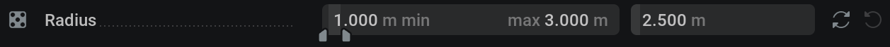
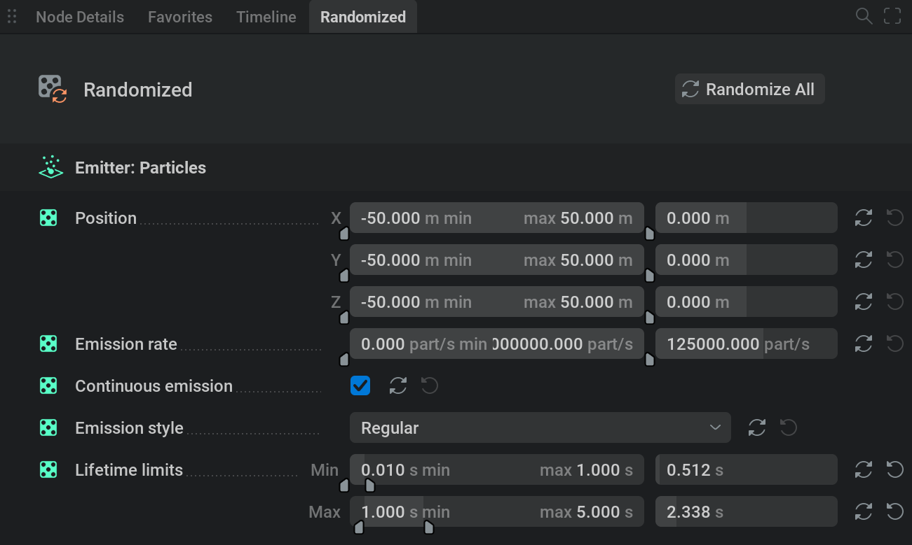
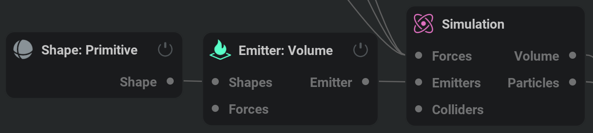
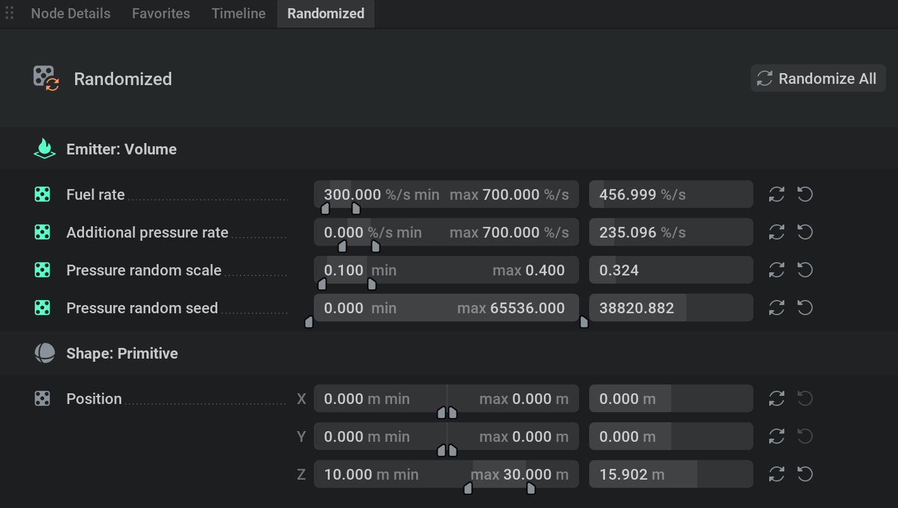
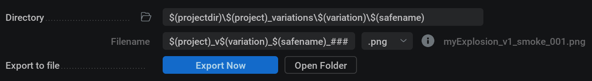
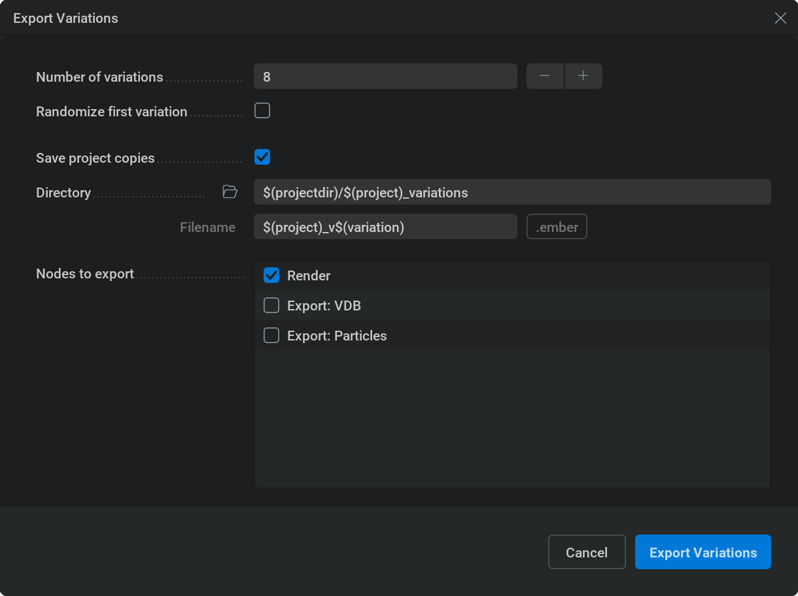

随机化#
在本节中，你将学习如何自动创建并导出项目变体！此功能也称为“wedging”（批量变体测试）。例如，如果某个项目需要大量相似元素，或者你想给主管展示几个备选方案，又或者想为主视觉元素找到那个最理想的随机种子，此功能都会很有用。
设置随机化#
可以通过将覆盖状态设置为 Randomize Override来随机化参数。操作方式是按住 Shift +  并单击
并单击  旁边的圆形图标。随机化参数会用
旁边的圆形图标。随机化参数会用  图标表示。要禁用 Randomize Override,
图标表示。要禁用 Randomize Override,  ，请单击
，请单击  图标，将其设置回
图标，将其设置回  No Override。
No Override。
可以通过  并单击
并单击  图标，将参数从随机化选项卡中移除。
图标，将参数从随机化选项卡中移除。
“Randomized”选项卡主要包含范围滑块，常规参数滑块就位于其旁边。
使用范围滑块，可以指定随机值可选取的最小值和最大值。
使用旁边的常规参数滑块，可以查看并编辑当前参数值。参数被随机化时，此值会被指定范围内的随机值覆盖。
单击参数旁边的  图标，将参数从随机化选项卡中移除。
图标，将参数从随机化选项卡中移除。
要随机化所有参数，可以单击蓝色 Randomize All 按钮，或单击 UI 右上角的  图标。
图标。
示例：
{kind=link}

在此设置下，可以用右侧滑块设置 Radius，但当参数被随机化时，它的值会被范围滑块指定的 1 到 3 之间的随机值覆盖。
{kind=link}

不同类型的参数在 Randomized 选项卡中的设置方式略有不同。下面按照右侧图像中的顺序查看它们：
3-vector parameters（3 向量参数） 会拆分为三个范围滑块，每个滑块代表一个轴。这意味着可以为每个轴定义随机化幅度。例如，如果只想随机化 Z 轴，可以在另外两个轴的范围滑块最小值和最大值字段中输入相同值，将它们固定。
Value parameters（数值参数）是最常见的类型，会以一个范围滑块表示。
Checkboxes（复选框） 在 Randomized 选项卡中会在随机化时随机开启或关闭。
Dropdown menus（下拉菜单） 在随机化时会被分配一个随机菜单项。
Range sliders（范围滑块） 会拆分为两个范围滑块，一个用于最小值，一个用于最大值。例如，将 Lifetime limits Max 分量的最小值设为 1、最大值设为 5，就可以让每个变体中的粒子获得 1 到 5 秒之间的不同最大寿命。
随机化爆炸示例：
{kind=link}

现在假设我们想扩展选择，查看八个不同的爆炸。
看一下 Randomized 选项卡现在是如何设置的，以及为什么这样设置。
{kind=link}

决定此爆炸中需要变化的属性的参数，都已添加到 Randomized 选项卡中。
Fuel rate（燃料速率）对爆炸的整体大小和强度影响很大。范围设置为 300% 到 700%，这些值是通过实验确定的。低于 300% 会让爆炸太弱而不够真实，高于 700% 会让爆炸大到超出边界框。因此，两者之间的所有值都能产生效果不错的变体。
Additional pressure rate（附加压力速率）会决定形状的随机程度。数值越高，注入的随机压力越多，会得到越随机、越有机的形状。较低数值会得到更接近球形的原子弹式形状。范围设置为 0% 到 700%，因为 0% 可得到非常球形的爆炸，而高于 700% 的结果既不好看也不够独特。
请注意，Fuel rate（燃料速率）和 Additional pressure rate（附加压力速率）都会影响爆炸强度。因此请务必检查这些参数同时处于各自范围最小值和最大值时的情况，以确认这些潜在变体是否仍然可用。
Pressure random scale 决定添加压力时随机图案的尺度。范围根据期望的最大和最小细节设置为 0.1 到 0.4。这里数值越高，细节越小。因此高于 0.4 时差异会小到不再有趣。为了获得最多样的变体，为范围找到合适的最小值和最大值很重要。
Pressure random seed（压力随机种子）保持默认范围，因为对于种子参数，任何不同的值都会产生完全不同的图案。
Position 在 X 和 Y 轴上的最小值与最大值都设置为 0。这可确保每个变体中这些值都为 0，球体不会在这些轴上移动。Z 轴范围为 10 到 30，表示每个变体中球体都会处于两者之间的不同高度。这可以在冲击波和强度上带来一些有趣变化。
导出变体#
导出变体首先要像平常一样设置  Render,
Render,  Export:Particles或
Export:Particles或  Export:VDB 节点，但额外需要使用
Export:VDB 节点，但额外需要使用 $(variation) 变量，并将其放入 Directory 或 Filename 字段中。如果不使用它，因为目录或文件名没有唯一内容，每个变体都会覆盖前一个变体的文件。
示例：
{kind=link}

这里， myExplosion 作为项目文件名时，会在项目目录中创建一个名为 myExplosion_variations 的文件夹（项目目录也就是存放 .ember 文件的位置）。
在该目录中，每个变体都会创建一个带编号的文件夹。
这些文件夹中会为每个渲染通道创建子文件夹。
所有文件都会根据文件名、变体编号和渲染通道动态命名。可以在 Filename 字段旁看到文件名示例。
如果要导出多个变体，而不是只导出一次，请前往 File/Export Variations… （位于用户界面左上角）。
“Export Variation”窗口会弹出。
{kind=link}

Number of variations： 模拟运行并导出的次数。
Randomize first variation： 如果勾选，在导出第一个变体之前，所有设置为随机化的参数都会被赋予随机值。如果未勾选，第一个变体会使用当前已有的值。
Save project copies： 如果勾选，每个变体的项目文件都会以指定名称存储到指定位置。这样可以复现每个已导出的变体，否则你将不知道当时分配了哪些随机值。
Nodes to export： 这里会列出节点，你可以勾选想要用于导出变体的节点。
Cancel： 关闭 Export Variations 窗口且不导出。
Export Variations： 开始导出变体！
示例：
我们仍然使用 myExplosion 项目。使用上图中的设置时：
将导出 8 个爆炸变体。
第一个变体会是我们当前已有的精确模拟结果（也许是因为我们喜欢这个结果）。
每个变体都会保存一份项目副本，用于保存其设置以供之后使用。项目文件会存储在项目目录中的子文件夹 myExplosion_variations 中，并命名为 myExplosion_v1, myExplosion_v2, myExplosion_v3, 等。
我们只想从一个
 Render 节点导出，因此保留该节点勾选，其他节点不勾选。
Render 节点导出，因此保留该节点勾选，其他节点不勾选。单击蓝色 Export Variations 按钮并等待处理完成后，就会得到八个独特的爆炸！